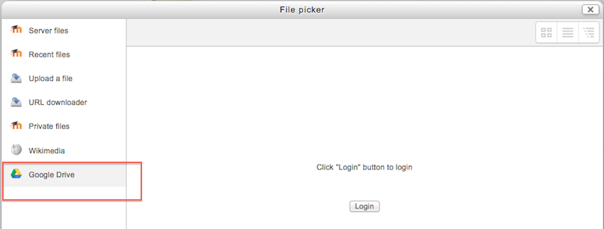
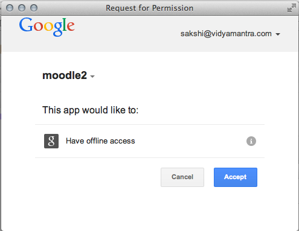
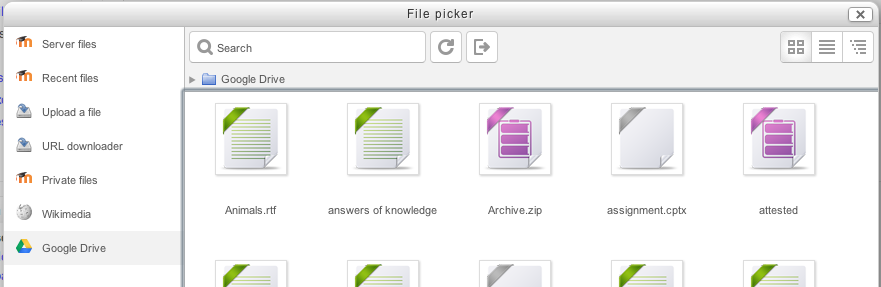

Google Drive can serve both as a repository from which users can “pull” files they need for their course and also a portfolio into which they can “push” files they want to keep. Both options need to be enabled by the administrator before they are available for teachers and students.
Note: In order to use either the Google Drive or Picasa repositories (also the Google Docs or Picasa portfolios) an administrator must register their Moodle site with Google, as described in Google OAuth 2.0 setup, and obtain a client ID and secret. The client ID and secret can then be used to configure all Google Docs and Picasa plugins.
- Log in as an administrator and go to Administration > Site administration > Plugins > Repositories > Manage Repositories.
- Activate the Google Docs repository by selecting ‘Enable and visible’ in the dropdown menu.
- Configure the Google Docs repository by entering the client ID and secret.
- Save changes.

- From the file picker, click on the Google Drive link and a prompt to log in will appear.
- If it is your first time, the click the “Allow access” button to log in.
Log into your account
Allow access

- Your files will display for you to choose from.
- You can view them in three ways by clicking one of the options at the top right.
There is just one capability, View Google Drive repository, which is allowed for the default authenticated user role.